What is a stone?
A stone is a special item that gives you a power. Each stone has:
- •A passive (some stones) — works the whole time the stone is equipped.
- •An ability — switch it on, it runs for a few seconds, then goes on cooldown.
Everything you need to know about stones, in plain words. No settings files, no code.
Times are in seconds. One heart is 2 health points, so "6 damage" means 3 hearts.
Section 1
A stone is a special item that gives you a power. Each stone has:
The first time you join the server you get one random stone to start with. You only get this once, and it is never a Sunstone, Moonstone or Dragon Stone.
Hold the stone and right-click. It leaves your hand and becomes equipped. You can have 2 stones equipped at once. Equipped stones show on your action bar, above your hotbar.
Type /stone unequip. Your equipped stones go back to your inventory. After that you must wait 60 seconds before you can equip another one.
Any of these works:
F (swap hands), Stone 2 is Shift + F./stone use (stone 1) or /stone use 2 (stone 2).The action bar shows Ready, Active, or the seconds left on cooldown for each stone.
Type /stone trigger. Click the blue options in chat to pick a different key for each stone. There are 20 key choices, picked because they rarely get in the way of a fight. Choosing a key the other stone already uses swaps them. /stone trigger reset puts everything back to F and Shift+F.
If you use a mod that binds keys to commands, bind it to /stone use 1 and /stone use 2, then pick Command only in the menu so the normal key doesn't also fire the stone.
Stone damage hits players and mobs around you, with some exceptions. Your stones never hurt:
Section 2
Cooldown is how long you wait after using a stone before you can use it again. Lasts is how long the ability stays on.
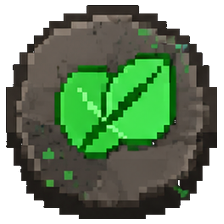
Plant Stone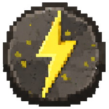
Lightning StoneTip: wait for a full charge before you swing.
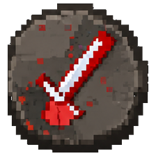
Melee Stone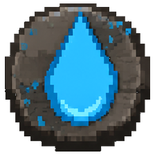
Water Stone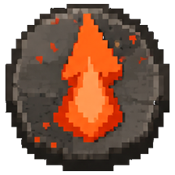
Fire Stone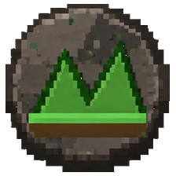
Earth Stone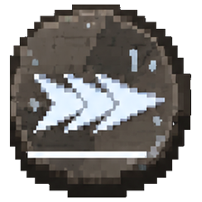
Speed Stone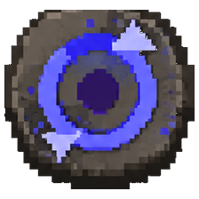
Escaper StoneGreat for escaping, or for a head start.
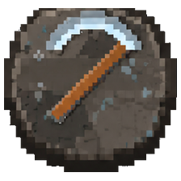
Miner Stone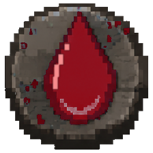
Blood Stone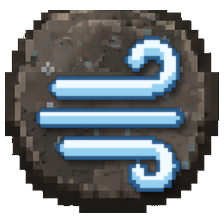
Air StoneThese are special. You can't craft them. Staff hand them out at events, and there is no limit on how many exist.
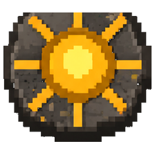
Sunstone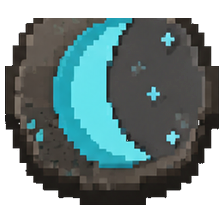
Moonstone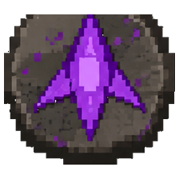
Dragon StoneSection 3
Every craftable stone has a special recipe. To see it, type /stone recipe (all stones) or /stone recipe <stone>.
Because everyone can see where the trial is, expect company. People defend trials and people ambush them.
If you get an "unstable stone" item, sneak + right-click with it to start the trial.
Each craftable stone can only be crafted 2 times on the whole server, ever. After that, nobody can start another trial for it. A stone that is lost or destroyed does not give its craft back. So stones are rare, and losing one hurts.
| Stone | What you need |
|---|---|
| 🌿 Plant | 4 Emerald Blocks, 2 Netherite Ingots, 2 Totems of Undying, 1 Enchanted Golden Apple |
| ⚡ Lightning | 7 Gold Blocks, 1 Lightning Rod, 1 Beacon |
| 🌑 Shadow | 2 End Crystals, 4 Sculk Shriekers, 1 Echo Shard, 2 Skeleton Skulls |
| ⚔️ Melee | 4 Potions of Strength, 2 Enchanted Golden Apples, 2 Golden Apples, 1 Netherite Sword |
| 🌊 Water | 4 Nautilus Shells, 2 Tridents, 2 Ice, 1 Conduit |
| 🔥 Fire | 4 Gilded Blackstone, 2 Potions of Fire Resistance, 2 Netherite Scrap, 1 Fire Charge |
| 🪨 Earth | 5 Grass Blocks, 2 Obsidian, 1 Netherite Block, 1 Rooted Dirt |
| 💨 Speed | 4 Hearts of the Sea, 2 Rabbit Feet, 2 Potions of Swiftness, 1 Piglin Head |
| 💖 Health | 4 Potions of Healing, 2 Totems of Undying, 2 Enchanted Golden Apples, 1 Wither Rose |
| 🌀 Escaper | 2 Ender Pearls, 1 Breeze Rod, 2 Amethyst Clusters, 1 Nether Star |
| ⛏️ Miner | 4 TNT, 4 Deepslate Diamond Ore, 1 Diamond Pickaxe |
| 🎭 Mischief | 6 Sculk, 2 Potions of Weakness, 1 Wither Skeleton Skull |
| 💰 Wealth | 4 Emerald Blocks, 4 Gold Blocks, 1 Nether Star |
| 🩸 Blood | 2 Enchanted Golden Apples, 2 Wither Skeleton Skulls, 2 Spider Eyes, 2 Skeleton Skulls, 1 Netherite Axe |
| 🌬️ Air | 4 Breeze Rods, 2 Golden Apples, 2 Wind Charged Potions, 1 Netherite Spear |
The shape matters. Use /stone recipe <stone> to see the exact layout.
Section 4
/stone trust <player>
Your stones will never hurt that player or affect them.
/stone untrust <player>
Your stones can affect them again.
Trust goes one way. If you trust a friend, your stones spare them, but their stones don't spare you until they trust you back.
Your trusted list is saved, so it stays after you log out.
Section 5
| Command | What it does |
|---|---|
/stone help | Shows the command list |
/stone list | Lists every stone |
/stone info <stone> | Shows a stone's cooldown and how many have been crafted |
/stone recipe [stone] | Opens the recipe screen |
/stone cooldowns | Shows your cooldowns |
/stone use [1|2] | Uses your first or second stone |
/stone trigger | Pick your activation keys |
/stone trigger reset | Back to F and Shift+F |
/stone trigger <1|2> label <text> | Names the key shown on your action bar (for key-bind mods) |
/stone unequip | Take off your stones (then wait 60s to equip again) |
/stone trust <player> | Your stones won't hurt them |
/stone untrust <player> | Undo trust |
/stone count <player> | How many stones a player has |
/stone status | Shows the plugin's status |
Staff also have commands to give or remove stones and reset cooldowns.
Section 6
Pair stones that work together — a damage stone with an escape stone, or a heal stone with a fighting stone.
Know your cooldown. Your action bar shows it — don't start a fight with your best stone on cooldown.
Lightning rewards patience. A full charge hits much harder than a rushed one.
Fire, Dragon and Moonstone are aimed — look at where you want it to go.
Earth is a safe room, not a wall. Everything it replaced comes back when it ends.
Don't carry your best stone into danger if you can avoid it — you may lose it for good on death.
Trust your team before you fight. One accidental mistake is not worth it.